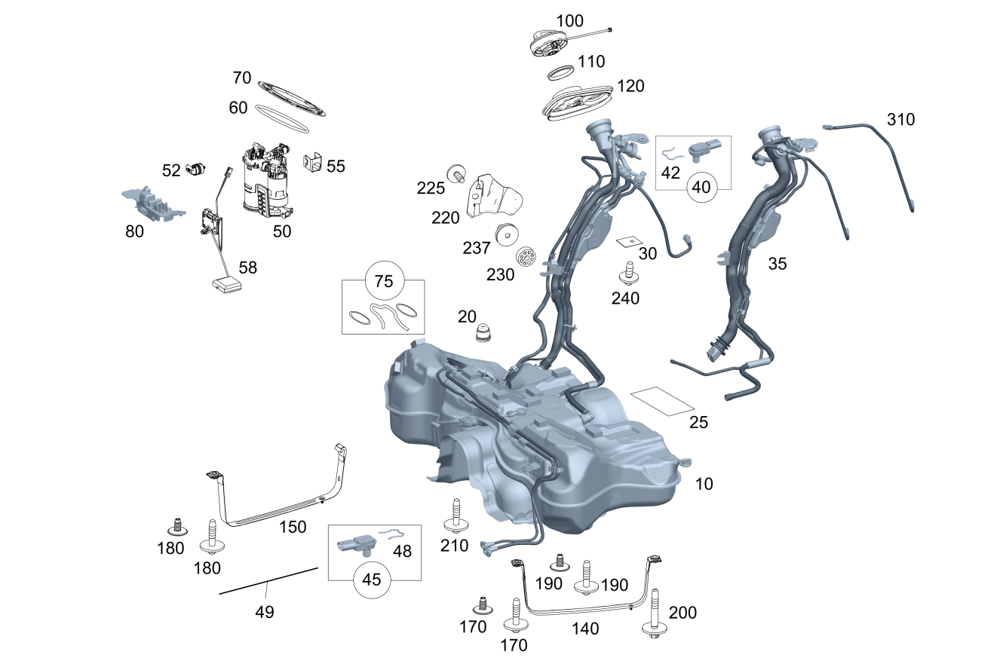

| № | Артикул | Название | Кол. | Примечание | Ограничение |
|---|---|---|---|---|---|
| 10 | A 205 470 50 01 | Топливный бак (FUEL TANK) | 1 | (M626/(M651/M651+165)+(M22/M22+M013)) | |
| 10 | A 205 470 54 01 | Топливный бак (FUEL TANK) | 1 | (M651/M626)+(916/916+165) | |
| 20 | A 000 987 01 39 | - Резиновый буфер (RUBBER BUMPER) | 2 | Сверху | M274/M626/M651 |
| 20 | A 000 987 01 39 | - Резиновый буфер (RUBBER BUMPER) | 2 | Сверху | M274/M626/M651/M654 |
| 20 | A 000 987 01 39 | - Резиновый буфер (RUBBER BUMPER) | 4 | Сверху | (M274/M274+M20/M651)+(460/494/835/916)/M276/M626+916/M177 |
| 20 | A 000 987 01 39 | - Резиновый буфер (RUBBER BUMPER) | 4 | Сверху | (M274/M274+M20/M651)+(460/494/835/916)/M276/M626+916/M177+916 |
| 20 | A 000 987 01 39 | - Резиновый буфер (RUBBER BUMPER) | 4 | Сверху | (M274/M626/M651/M654)+(460/494/835/916/933)/M276 |
| 20 | A 000 987 01 39 | - Резиновый буфер (RUBBER BUMPER) | 2 | Сверху | M626/M651+(M22/M22+M013) |
| 30 | A 205 473 01 80 | - Профильное уплотнение (PROFILE SEAL) | 1 | Запорная крышка горловины топливного бака к остову кузова | |
| 50 | A 205 470 01 94 | 1 | В топливном баке справа без топливопроводов | M626/M651 | |
| 50 | A 205 470 14 94 | FUEL DELIVERY MODULE (FEED UNIT) | 1 | В топливном баке справа без топливопроводов | M626/M651 |
| 50 | A 205 470 14 94 | FUEL DELIVERY MODULE (FEED UNIT) | 1 | В топливном баке справа без топливопроводов | M626+-916/M651+(M22/M22+M013)+-916/M654+(M16/M20/M20+M013) |
| 50 | A 205 470 03 94 | 1 | В топливном баке справа без топливопроводов | (M626/M651)+(916/460/494/ME04) | |
| 50 | A 205 470 16 94 | FUEL DELIVERY MODULE (FEED UNIT) | 1 | В топливном баке справа без топливопроводов | (M626/M651)+(916/460/494/ME04) |
| 50 | A 205 470 16 94 | FUEL DELIVERY MODULE (FEED UNIT) | 1 | В топливном баке справа без топливопроводов | (M626/M651)+916/M651+(ME04/M22+M014) |
| 50 | A 205 470 50 00 | FUEL DELIVERY MODULE (FEED UNIT) | 1 | В топливном баке справа без топливопроводов | 809+((M626/M651)+916/M651+(ME04/M22+M014)) |
| 50 | A 205 470 16 94 | FUEL DELIVERY MODULE (FEED UNIT) | 1 | В топливном баке справа без топливопроводов | (M626/M651/(M626/M651)+916)+835 |
| 50 | A 205 470 50 00 | FUEL DELIVERY MODULE (FEED UNIT) | 1 | В топливном баке справа без топливопроводов | 809+(M626/M651/(M626/M651)+916)+835 |
| 50 | A 205 470 16 94 | FUEL DELIVERY MODULE (FEED UNIT) | 1 | В топливном баке справа без топливопроводов | (M651+916/M654)+(460/494) |
| 50 | A 205 470 50 00 | FUEL DELIVERY MODULE (FEED UNIT) | 1 | В топливном баке справа без топливопроводов | 809+(M651+916/M654)+(460/494) |
| 50 | A 205 470 16 94 | FUEL DELIVERY MODULE (FEED UNIT) | 1 | В топливном баке справа без топливопроводов | (((M626/M651/M654)+916)/(M654+M20+M014))+165 |
| 50 | A 205 470 16 94 | FUEL DELIVERY MODULE (FEED UNIT) | 1 | В топливном баке справа без топливопроводов | (((M626/M651)+916)/M654+(915/916)/(M654+M20+M014))+165 |
| 58 | A 205 540 00 17 | Датчик уровня топлива (FUEL LEVEL SENSOR) | 1 | Справа | |
| 60 | A 025 997 18 45 | Кольцевая прокладка (O-RING) | 1 | Насосный модуль к баку; 135.5X6 | (M626/M651/M654)+(460/494) |
| 60 | A 025 997 18 45 | Кольцевая прокладка (O-RING) | 1 | Насосный модуль к баку; 135.5X6 | (M626/M651)+-(460/494) |
| 60 | A 025 997 18 45 | Кольцевая прокладка (O-RING) | 1 | Насосный модуль к баку; 135.5X6 | M626/M651 |
| 60 | A 025 997 18 45 | Кольцевая прокладка (O-RING) | 1 | Насосный модуль к баку; 135.5X6 | (M626/M651/M654/(M626/M651/M654)+(460/494/916))+165 |
| 60 | A 025 997 18 45 | Кольцевая прокладка (O-RING) | 1 | Насосный модуль к баку; 135.5X6 | (M626/M651/M654)+165 |
| 70 | A 001 471 14 30 | Байонетный затвор (BAYONET TYPE FASTENER) | 1 | Насосный модуль к баку | |
| 80 | A 205 470 01 38 | Запорная крышка (CLOSING CAP) | 1 | Между насосным модулем и датчиком уровня | |
| 100 | A 222 470 00 05 | Крышка наливной горловины (FILLER CAP) | 1 | ||
| 100 | A 222 470 00 05 | Крышка наливной горловины (FILLER CAP) | 1 | ||
| 100 | A 000 470 08 00 | Крышка горл. топ. бака (FUEL FILLER CAP) | 1 | ||
| 100 | A 222 470 01 05 | Крышка наливной горловины (FILLER CAP) | 1 | M626/M651 | |
| 100 | A 222 470 01 05 | Крышка наливной горловины (FILLER CAP) | 1 | M626/M651/M654 | |
| 100 | A 222 470 03 05 | Крышка наливной горловины (FILLER CAP) | 1 | M651+049 | |
| 100 | A 222 470 06 05 | Крышка наливной горловины (FILLER CAP) | 1 | (M651/M654)+498 | |
| 110 | A 000 476 00 00 | - Профильное уплотнение (PROFILE SEAL) | 1 | Замок топливного бака к наливному патрубку | |
| 110 | A 217 997 00 45 | - Уплотнительное кольцо (SEALING RING) | 1 | Замок топливного бака к наливному патрубку | |
| 120 | A 099 476 01 80 | Профильное уплотнение (PROFILE SEAL) | 1 | К наливному патрубку | |
| 120 | A 099 476 00 80 | Профильное уплотнение (PROFILE SEAL) | 1 | К наливному патрубку | U79 |
| 140 | A 205 470 01 40 | Хомут (TENSIONING STRAP) | 1 | Слева | M276/460/494/835/916/M177 |
| 140 | A 205 470 01 40 | Хомут (TENSIONING STRAP) | 1 | Слева | M276/460/494/835/916/933/M177 |
| 140 | A 205 470 01 40 | Хомут (TENSIONING STRAP) | 1 | Слева | M276/460/494/835/916/933/M177 |
| 140 | A 205 470 01 40 | Хомут (TENSIONING STRAP) | 1 | Слева | M276/460/494/835/916/933 |
| 140 | A 205 470 01 40 | Хомут (TENSIONING STRAP) | 1 | Слева | M276/460/494/835/916/933/945 |
| 150 | A 205 470 00 40 | Хомут (TENSIONING STRAP) | 1 | Справа | |
| 170 | A 003 998 63 50 | Пробка (STOP PLUG) | 1 | Топливный бак к кузову, слева | |
| 170 | A 003 998 63 50 | Пробка (STOP PLUG) | 1 | Топливный бак к кузову, слева | M274+M16/M274+M20+M013/M626+M16/M651/M264+M15/M654+M20 |
| 170 | A 000 990 96 03 | Винт с неспадающей шайбой (SCREW W WASHER ASSEMBLY) | 1 | Топливный бак к кузову, слева; M8X35 | M276/ME04/ME06/460/494/835/916/M177 |
| 170 | A 000 990 96 03 | Винт с неспадающей шайбой (SCREW W WASHER ASSEMBLY) | 1 | Топливный бак к кузову, слева; M8X35 | M276/ME04/ME06/460/494/835/916/933/M177 |
| 170 | A 000 990 96 03 | Винт с неспадающей шайбой (SCREW W WASHER ASSEMBLY) | 1 | Топливный бак к кузову, слева; M8X35 | M276/ME04/ME06/460/494/835/916/933/M177 |
| 170 | A 000 990 96 03 | Винт с неспадающей шайбой (SCREW W WASHER ASSEMBLY) | 1 | Топливный бак к кузову, слева; M8X35 | M276/ME04/ME06/460/494/835/916/933/M177 |
| 170 | A 000 990 96 03 | Винт с неспадающей шайбой (SCREW W WASHER ASSEMBLY) | 1 | Топливный бак к кузову, слева; M8X35 | M276/ME04/ME05/ME06/460/494/835/916/933/M177 |
| 170 | A 000 990 96 03 | Винт с неспадающей шайбой (SCREW W WASHER ASSEMBLY) | 1 | Топливный бак к кузову, слева; M8X35 | M264/M276/ME04/ME05/ME06/460/494/835/916/933/M177 |
| 170 | A 000 990 96 03 | Винт с неспадающей шайбой (SCREW W WASHER ASSEMBLY) | 1 | Топливный бак к кузову, слева; M8X35 | 915/916/ME04/ME05/ME06/460/494/835/933/945/((M651/(M654+M20))+M014)/((M274/M264)+M20) |
| 170 | A 000 990 96 03 | Винт с неспадающей шайбой (SCREW W WASHER ASSEMBLY) | 1 | Топливный бак к кузову, слева; M8X35 | 916/ME04/ME05/ME06/460/494/835/933/945 |
| 170 | A 000 990 96 03 | Винт с неспадающей шайбой (SCREW W WASHER ASSEMBLY) | 1 | Топливный бак к кузову, слева; M8X35 | 916/ME05/460/494/835/933/945 |
| 170 | A 000 998 60 50 | Пробка (STOP PLUG) | 1 | Топливный бак к кузову, слева; M8 | |
| 170 | A 000 998 60 50 | Пробка (STOP PLUG) | 1 | Топливный бак к кузову, слева; M8 | -(806/807) |
| 180 | A 000 990 96 03 | Винт с неспадающей шайбой (SCREW W WASHER ASSEMBLY) | 1 | Топливный бак к кузову, справа; M8X35 | |
| 180 | A 003 990 96 03 | Винт с неспадающей шайбой (SCREW W WASHER ASSEMBLY) | 1 | Топливный бак к кузову, справа; M8X43 | |
| 180 | A 003 998 63 50 | Пробка (STOP PLUG) | 1 | Топливный бак к кузову, слева | M274+M16/M264/M626/M651/M654 |
| 180 | A 000 990 96 03 | Винт с неспадающей шайбой (SCREW W WASHER ASSEMBLY) | 1 | Топливный бак к кузову, слева; M8X35 | 916/(M274/M264)+M20+M014/460/494/835/933/830/ME05/915+ME05 |
| 180 | A 000 998 60 50 | Пробка (STOP PLUG) | 1 | Топливный бак к кузову, слева; M8 | M626/M651+(M22/M22+M013) |
| 180 | A 000 990 96 03 | Винт с неспадающей шайбой (SCREW W WASHER ASSEMBLY) | 2 | Топливный бак к кузову, слева; M8X35 | 915/M274+M20/M654+M014 |
| 180 | A 000 998 60 50 | Пробка (STOP PLUG) | 1 | Топливный бак к кузову, слева; M8 | (806/807)+(M626/M651+(M22/M22+M013)) |
| 180 | A 000 998 60 50 | Пробка (STOP PLUG) | 1 | Топливный бак к кузову, слева; M8 | (M626/M651+(M22/M22+M013)) |
| 190 | A 000 990 96 03 | Винт с неспадающей шайбой (SCREW W WASHER ASSEMBLY) | 1 | Топливный бак к кузову, слева; M8X35 | M274+(M16/(M20+M013))/M626+M16/M651/M264+M15/M654+M20 |
| 190 | A 000 990 96 03 | Винт с неспадающей шайбой (SCREW W WASHER ASSEMBLY) | 1 | Топливный бак к кузову, слева; M8X35 | M274+M16/M264/M626/M651/M654 |
| 200 | A 002 990 89 03 | Самонарезающий винт (SELF-TAPPING SCREW) | 1 | Топливный бак к кузову, слева сзади | M276/ME04/ME06/460/494/835/916/M177 |
| 200 | A 002 990 89 03 | Самонарезающий винт (SELF-TAPPING SCREW) | 1 | Топливный бак к кузову, слева сзади | M276/ME04/ME06/460/494/835/916/933/M177 |
| 200 | A 002 990 89 03 | Самонарезающий винт (SELF-TAPPING SCREW) | 1 | Топливный бак к кузову, слева сзади | M276/ME04/ME06/460/494/835/916/933/M177 |
| 200 | A 002 990 89 03 | Самонарезающий винт (SELF-TAPPING SCREW) | 1 | Топливный бак к кузову, слева сзади | M276/ME04/ME06/460/494/835/916/933/M177 |
| 200 | A 002 990 89 03 | Самонарезающий винт (SELF-TAPPING SCREW) | 1 | Топливный бак к кузову, слева сзади | M276/ME04/ME05/ME06/460/494/835/916/933/M177 |
| 200 | A 002 990 89 03 | Самонарезающий винт (SELF-TAPPING SCREW) | 1 | Топливный бак к кузову, слева сзади | M276/M264/ME04/ME05/ME06/460/494/835/916/933/M177 |
| 200 | A 002 990 89 03 | Самонарезающий винт (SELF-TAPPING SCREW) | 1 | Топливный бак к кузову, слева сзади | M276/M264/ME04/ME05/ME06/460/494/835/916/933/945/M177 |
| 200 | A 002 990 89 03 | Самонарезающий винт (SELF-TAPPING SCREW) | 1 | Топливный бак к кузову, слева сзади | 915/916/((M651/(M654+M20))+M014)/M274+M20/M264+M20 |
| 200 | A 002 990 89 03 | Самонарезающий винт (SELF-TAPPING SCREW) | 1 | Топливный бак к кузову, слева сзади | 915/(M651/M654)+M014/M274+M20 |
| 200 | A 002 990 89 03 | Самонарезающий винт (SELF-TAPPING SCREW) | 1 | Топливный бак к кузову, слева сзади | 915/M654+M014/M274+M20 |
| 200 | A 001 998 72 50 | Пробка (STOP PLUG) | 1 | Топливный бак к кузову, слева сзади | |
| 200 | A 002 990 89 03 | Самонарезающий винт (SELF-TAPPING SCREW) | 1 | Топливный бак к кузову, слева сзади | 916/(M274/M264)+M20+M014/460/494/835/933/830 |
| 200 | A 002 990 89 03 | Самонарезающий винт (SELF-TAPPING SCREW) | 1 | Топливный бак к кузову, слева сзади | 915/M274+M20/M654+M014 |
| 200 | A 001 998 72 50 | Пробка (STOP PLUG) | 1 | Топливный бак к кузову, слева сзади | -(806/807) |
| 200 | A 002 990 89 03 | Самонарезающий винт (SELF-TAPPING SCREW) | 1 | Топливный бак к кузову, слева сзади | 916 |
| 200 | A 001 998 72 50 | Пробка (STOP PLUG) | 1 | Топливный бак к кузову, слева сзади | M626/M651+(M22/M22+M013) |
| 200 | A 001 998 72 50 | Пробка (STOP PLUG) | 1 | Топливный бак к кузову, слева сзади | (806/807)+(M626/M651+(M22/M22+M013)) |
| 200 | A 001 998 72 50 | Пробка (STOP PLUG) | 1 | Топливный бак к кузову, слева сзади | (M626/M651+(M22/M22+M013)) |
| 210 | A 000 990 96 03 | Винт с неспадающей шайбой (SCREW W WASHER ASSEMBLY) | 1 | Топливный бак к кузову, посередине; M8X35 | |
| 220 | A 205 475 00 46 | Защитный экран (PROTECTIVE METAL SHEET) | 1 | К держателю наливного патрубка | |
| 220 | A 205 475 00 46 | Защитный экран (PROTECTIVE METAL SHEET) | 1 | К держателю наливного патрубка | (M626/M654/M651)+-(460/494) |
| 225 | A 000 990 96 03 | Винт с неспадающей шайбой (SCREW W WASHER ASSEMBLY) | 1 | Заливной патрубок к продольному несущему элементу; M8X35 | |
| 230 | A 003 990 14 82 | Диск (WINDOW) | 1 | Заливной патрубок к продольному несущему элементу | |
| 240 | A 001 990 54 03 | Винт с неспадающей шайбой (SCREW W WASHER ASSEMBLY) | 1 | Наливной патрубок к кузову сверху |
Позиций: 94 · подписано на схемах: 94 · колесо — плавный зум в курсор, перетаскивание — пан, двойной клик — зум, клик по артикулу — скопировать.